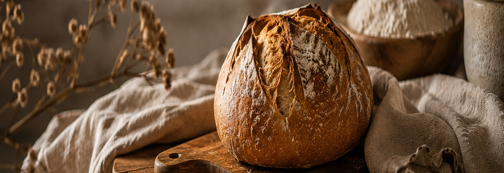
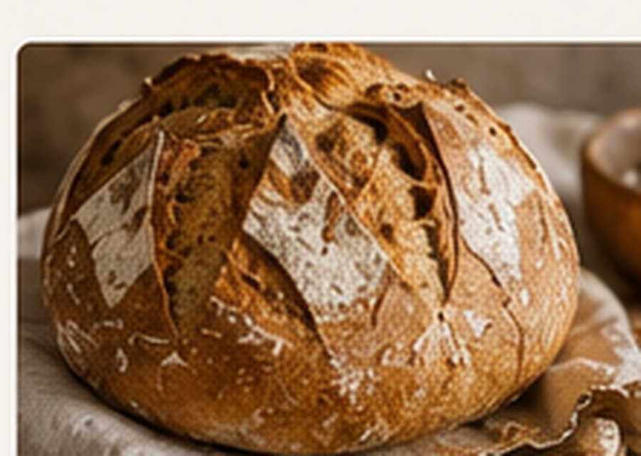
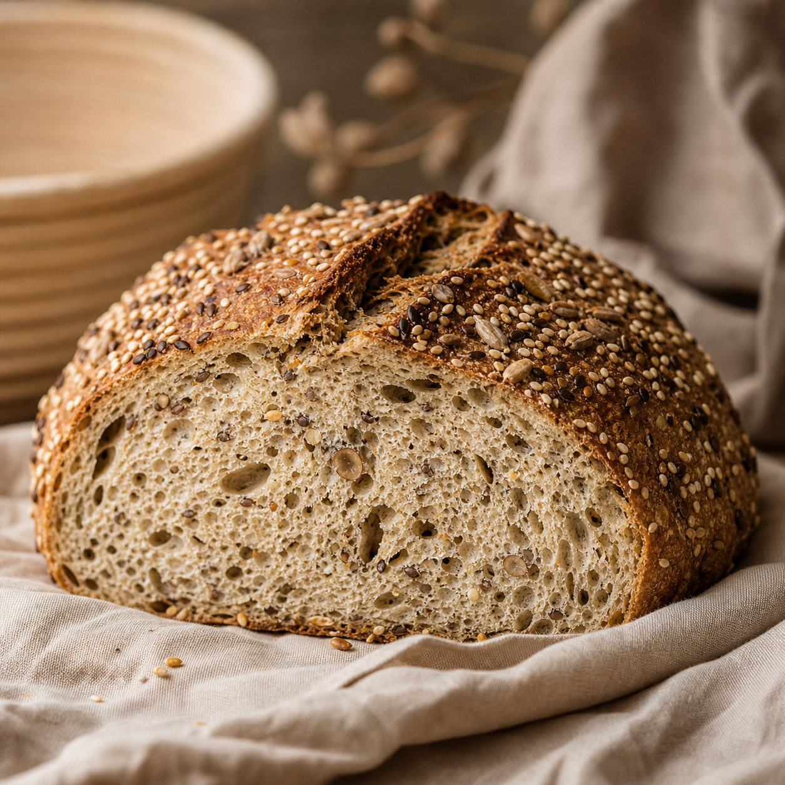
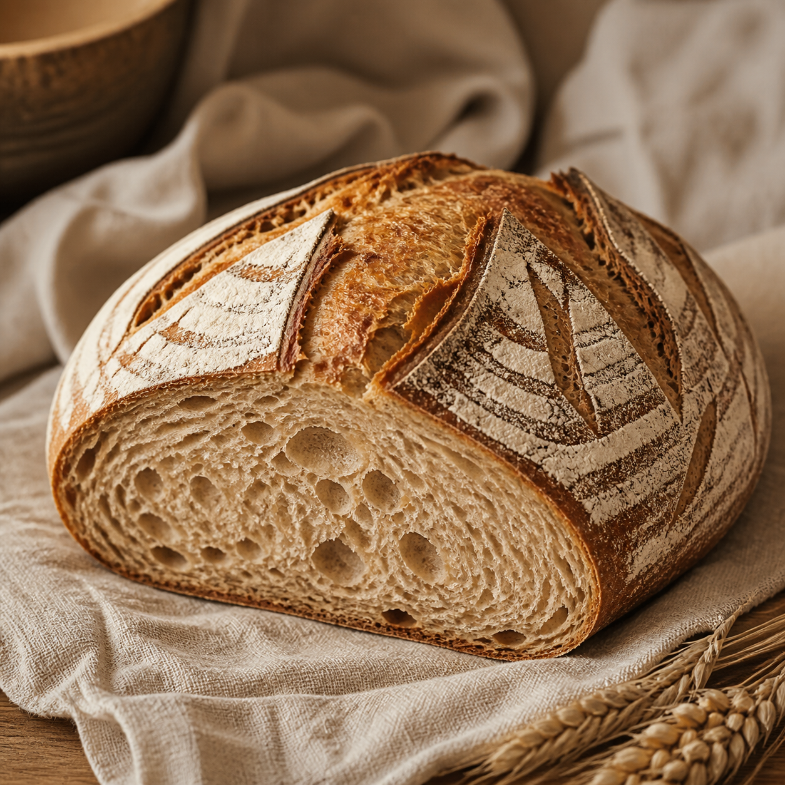
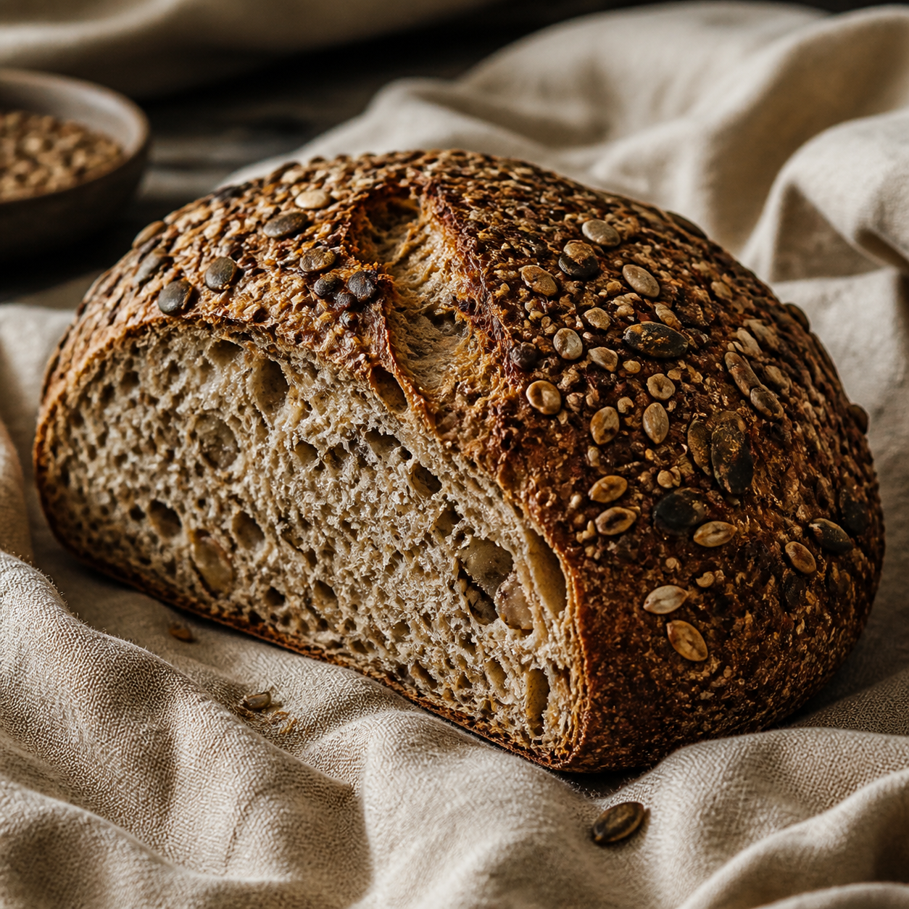
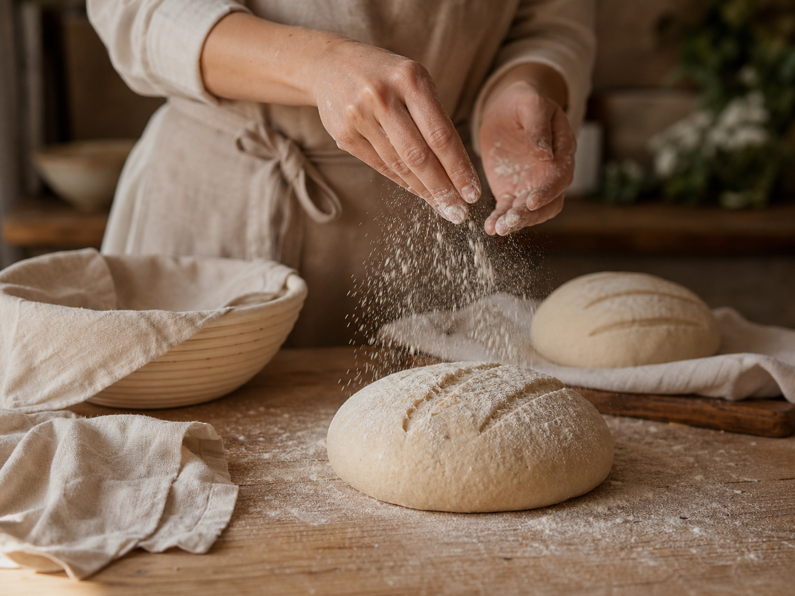

Natuurlijke ingrediënten
Bloem, water, zout, tijd en aandacht. Geen onnodige toevoegingen.
Kaatjes Home Bakery
Kaatjes Home Bakery bakt kleinschalig brood voor mensen die houden van pure ingrediënten, een knapperige korst en de geur van echt vers brood.

Bloem, water, zout, tijd en aandacht. Geen onnodige toevoegingen.
Voor meer smaak, structuur en een beter verteerbaar brood.
Kleine batches, met de hand gevormd en vers gebakken.
Bestellen kan eenvoudig via WhatsApp of mail.
Ons brood
Kies uit zuurdesem volkoren, meergranen, speltbrood en noten & zaden, vers gebakken voor afhaal in Berlicum en omgeving Den Bosch.

Vol van smaak, stevige korst en zachte kruim.
vanaf €4,50
Boordevol granen en zaden, rijk aan smaak.
vanaf €4,75
Licht verteerbaar, zacht en ambachtelijk gebakken.
vanaf €4,25
Met walnoten, zonnebloempitten en een vleugje honing.
vanaf €5,25
Over Kaatje
Wat begon als liefde voor huisgemaakt brood groeide uit tot Kaatjes Home Bakery: een kleine thuisbakkerij waar smaak, rust en eerlijke ingrediënten centraal staan.
Elke week bakt Kaatje een beperkt aantal broden. Zo blijft elk brood persoonlijk, vers en met aandacht gemaakt.
Met liefde gebakken, voor jou.
Blog
Bestellen
Bestellen kan tot donderdag 20:00 uur. Afhalen op vrijdag of zaterdag in overleg.
Hoi Kaatje, ik wil graag 1 zuurdesem volkoren en 1 meergranenbrood bestellen. Afhalen graag vrijdagmiddag. Groetjes!
Bestel via WhatsApp Bestel via mail Vervang het telefoonnummer en mailadres inindex.html.
Contact
Ambachtelijk brood uit eigen keuken.